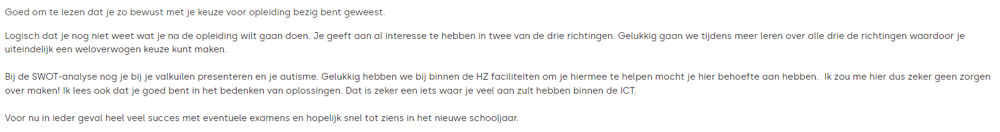

<!DOCTYPE html>
<html lang="en">

</html>

<head>
  <meta charset="UTF-8">
  <meta name="viewport" content="width=device-width, initial-scale=1.0">
  <meta http-equiv="X-UA-Compatible" content="ie=edge">
  <title>Blog</title>
  <link rel="stylesheet" href="styles.css">
</head>

<body class="bodyBackground">
  <h1>
    <table>
      <tr>
        <th><a class="navbar" href="http://localhost/index.html">Home</a></th>
        <th><a class="navbar" href="http://localhost/profile.html">Profiel</a></th>
        <th><a class="navbar" href="http://localhost/dashboard.html">Dashboard</a></th>
        <th style="background-color: #1167b1;"><a class="navbar" href="http://localhost/blog.html">Blog</a></th>
        <th><a class="navbar" href="http://localhost/faq.html">FAQ</a></th>
      </tr>
    </table>
  </h1>
  <hr>
  <h2>Studiekeuze:</h2>
  <h3>ICT is altijd al interessant voor mij geweest, al is het gamen of computers bouwen/repareren. <br>
    Op de middelbare school heb ik informatica gehad waarbij ik Python heb geleerd, wat ik heel leuk vond. <br>
  Daarom wil ik later ook met dit vak brood op de plank brengen.</h3>
  <hr>
  <h2>Persoonlijke SWOT-analyse:</h2>
  <h3>Strengths: Wat zijn je sterke punten?</h3>
  <h4>het verzinnen van verschillende oplossingen bij bepaalde problemen.</h4>
  <h3>Weaknesses: wat zijn je valkuilen?</h3>
  <h4>presenteren, autisme wat sommige situaties kan beinvloeden</h4>
  <h3>Opportunities: Welke kansen zie je?</h3>
  <h4>Ik hoop veel valkuilen zoals presenteren en andere als gevolg van mijn autisme weg te werken of te verminderen.</h4>
  <h3>Threats: Welke risico's zie je?</h3>
  <h4>als gevolg van het veel achter een pc zitten kan mijn gezondheid er aan gaan lijden. dit is hopelijk te vermijden door extra te gaan sporten in vrije tijd.</h4>
  <hr>
  <h2>Programming experience:</h2>
  <h3>Ik heb op de middelbare informatica gehad waarbij ik Python en Adruino heb geleerd. ook heb ik voor mijn profielwerkstuk een mobiele app gemaakt met Dart.</h3>
  <hr>
  <h2>First feedback:</h2>
  <h3></h3>
  <h3>De feedback heeft mij gerustgesteld.</h3>
  <hr>
</body>